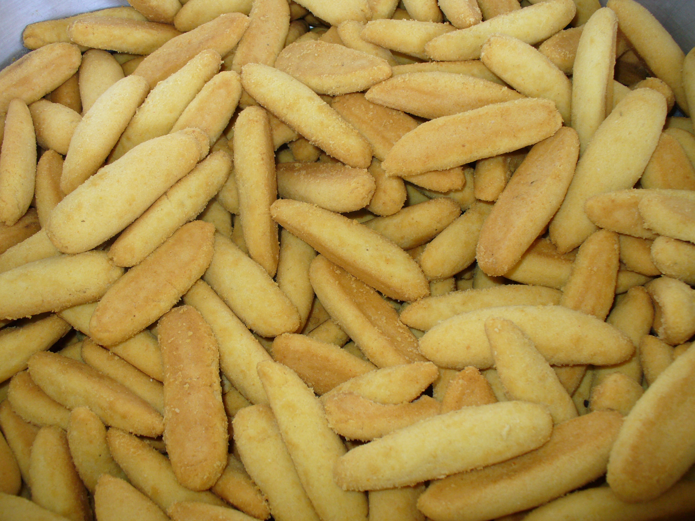

Como hacer Bizcochos de Achira
Los bizcochos de achira (originarios del departamento del Huila, en Colombia)
son productos de repostería tradicional con características muy particulares
que los diferencian de cualquier otro amasijo.

Ingredientes
- 1 libra o 200–450 g de almidón de achira.
- 1 a 2 libras de cuajada fresca muy bien escurrida (sin suero).
- Mantequilla o margarina derretida (aproximadamente 225 g por libra de almidón, o 30 g para porciones pequeñas).
- Yemas de huevo (1 o 2 unidades).
- Una pizca de azúcar, sal al gusto y color (opcional).
Pasos de Preparacion
- Mezclar secos y lácteos: En un recipiente amplio, mezcla el almidón de achira con el azúcar, la sal y el polvo para hornear (si decides usarlo de forma opcional). Incorpora la cuajada previamente molida o desmenuzada finamente y las yemas de huevo.
- Añadir grasas: Agrega la mantequilla derretida (fría) y unas gotas de color si deseas darles su tono característico.
- Amasar y reposar: Amasa muy bien todos los ingredientes hasta obtener una pasta suave, homogénea y manejable. Deja reposar la masa durante unos 20 a 30 minutos.
- Formar los bizcochos: Toma porciones pequeñas de masa y forma cilindros o "dedos" de unos 5 cm de largo por 1.5 cm de ancho con las manos.
- Hornear: Colócalos en una lata o bandeja previamente engrasada dejando espacio entre ellos. Llévalos al horno precalentado a 180 °C durante 10 a 15 minutos.
- Tostar: Pasado ese tiempo, baja la temperatura del horno al mínimo (aproximadamente 120 °C) y déjalos durante 30 a 40 minutos más para que adquieran su textura tostada característica. Retira, deja enfriar y disfruta.
Video de la receta:
Ir a youtube